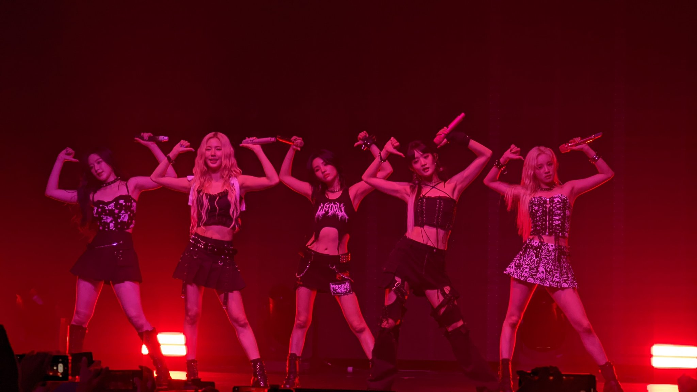

메인페이지로
아이들
하이~ 이곳은 아이들의 앨범 주제에 대한 벅찬 마음을 나누기 위한 페이지입니다!
- Nxde

- 전체적인 컨셉은 마릴린 먼로의 사상에 대한 오마주 및 존경이다.
- 이는 가사와 뮤직비디오에 잘 나타나있다.
- Nxde라는 것은 단순히 벗은 모습을 말하는 것이 아니라 나를 감싸고 있는 모든 외부적인 시선이나 이미지에 상관없이 있는 그대로의 나의 모습을 말한다.
- 앨범명 I-Love는 타인에게의 사랑을 이야기하는 것으로 보일 수 있으나 앨범 트랙을 역순으로 들어보면 타인에의 사랑 -> 나 자신으로의 사랑으로 시점이 바뀌는 것을 발견할 수 있다.